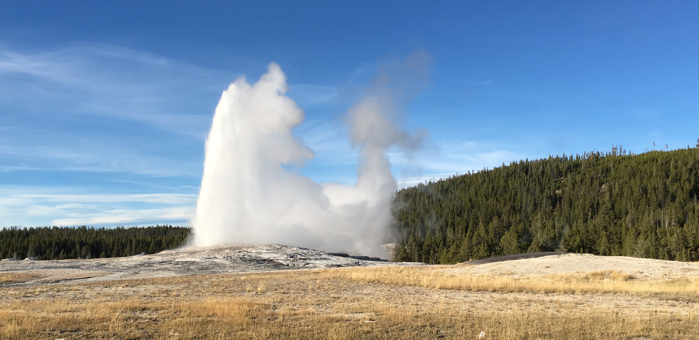

Old Faithful
Old Faithful is the most famous geyser in the world. It erupts many times a day, shooting hot water and steam high into the air. Park rangers predict eruption times, so check the posted times at the Old Faithful Visitor Education Center and find a seat on the boardwalk a few minutes early.